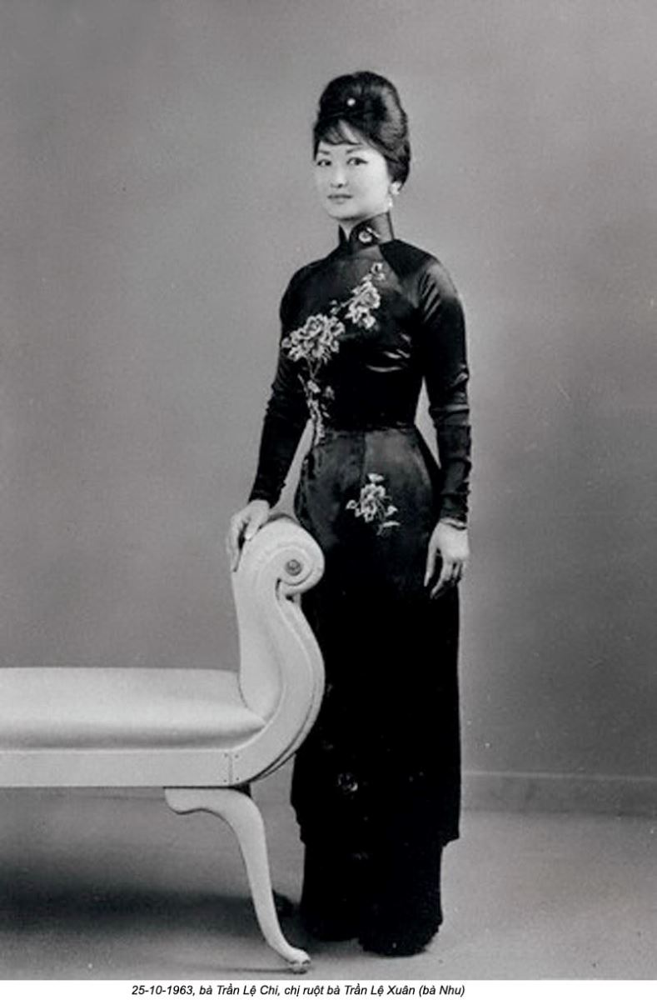

Chương 3

àng tìm hiểu về những năm thiếu thời của bà Nhu, ánh hào quang của quá khứ gia đình bà càng kém vẻ lộng lẫy. Những gương mặt tươi cười của đôi vợ chồng già nua trong bức hình trên một tờ báo ở Washington năm 1986 thật khó lòng hòa hợp với bức chân dung u ám của ông bà Chương vốn đã xuất hiện. Những mảnh ghép hồi ức “khốn khổ” về thời thơ ấu của bà Nhu gắn lại đúng chỗ khi tôi hiểu rằng không ai, tất nhiên ngoài song thân của bà, từng mảy may nghĩ đến việc một ngày nào đó bé gái nhỏ xíu này, chào đời trong một bệnh viện Hà Nội vào ngày 22 tháng 8 năm 1924, rốt cuộc sẽ trở thành một cái gì đó quan trọng.
Một ca sinh nở truyền thống sẽ diễn ra tại nhà với một bà mụ, người sẽ nói rằng sinh linh này không sẵn lòng để chào đời vì lẽ đứa bé nằm ngôi ngược, vì vậy mà không chịu trượt xuống ống sinh. Bà sẽ phản đối kẹp forcep, những dụng cụ nhỏ bé và khoa học hiện đại, như là sự can thiệp vào thiên ý. Một bà mụ sẽ bỏ mặc cho đứa bé, xanh xao yếu ớt, câm nín, và bất động, quay trở về bất luận giao lộ nào nằm đâu đó giữa thiên đường và trần thế dành cho những linh hồn chưa được đầu thai lang thang phiêu dạt.
Nhưng không có bà mụ nào trong ngày hôm đó cả. Đứa bé sẽ là một bé trai. Người mẹ chắc chắn điều đó đến độ bà đã thu xếp việc sinh nở trong bệnh viện. Bà đã trải qua nỗi khủng khiếp của cơn đau đẻ kéo dài, biết rằng điều đó xứng đáng - vì một đứa con trai.
Vị bác sĩ người Pháp có lẽ đã lo sợ sẽ bị khiển trách nếu có điều gì bất thường xảy ra. Đó là lần đầu tiên ông đỡ đẻ một em bé Việt kể từ khi ông đặt chân đến Đông Dương, nhưng đây là một ca đặc biệt.
Người thiếu phụ đầm đìa mồ hôi và máu đang nằm trên bàn là bà Chương, công chúa Nam Trân, một thành viên của hoàng gia.
Nhan sắc tuyệt mỹ của người con gái mười bốn tuổi này thật là hiếm hoi đến độ về sau nhờ đó bà đã giành được một tấm huân chương phong tặng bởi những người Pháp say mê bà, những người đã đặt cho bà biệt danh “Viên ngọc trai Á châu”.(1) Mặc dù được dạy về nghệ thuật nội trợ, cũng như ca hát và thêu thùa, bà không bao giờ cần động đến dù chỉ một ngón tay mảnh dẻ, ngoại trừ để rung chuông gọi người hầu. Nhiệm vụ quan trọng nhất của bà với tư cách người vợ là sinh cho chồng một đứa con trai thừa tự.
Chồng bà xuất thân từ một gia đình địa chủ quyền thế. Là con trai cả của một thống đốc tỉnh ở Bắc Kỳ thuộc Pháp, ông Chương đã được ban cho mọi điều tốt đẹp nhất trần đời, từ một nền giáo dục Tây phương cho đến một cô dâu thuộc dòng dõi hoàng tộc.(2) Dòng họ Trần của ông vốn có quan hệ họ hàng với nhà vua, thành ra ông Chương cũng là một người bà con xa với vợ ông.
Vị bác sĩ người Pháp hẳn đã cảm thấy áp lực ghê gớm để cứu lấy cái hình hài tái nhợt cuối cùng đã lộ diện giữa một lớp màng nhầy nhụa huyết dịch. Đây là cơ hội để vị bác sĩ chứng tỏ bản thân - và sự vượt trội của nền y học Tây phương. Ông nắm chặt hai mắt cá chân của đứa bé và đét liên hồi vào cặp mông bé xíu cho đến khi những tiếng khóc đầu tiên bật ra.
Tiếng khóc ấy là lời chào đầu tiên của đứa bé sơ sinh với thế giới.(3)
Đó là một bé gái.
Một người mẹ trẻ mười bốn tuổi như bà Chương đã làm gì với đứa con mới đẻ, một nhúm thịt với gương mặt đỏ hỏn, đang khóc toáng lên trong tay mình? Khi vừa mới chào đời, chẳng có mấy lý do để người ta tin rằng số phận của bà sẽ khác với hàng bao thế kỷ phụ nữ đi trước bà. Trong truyền thống Khổng giáo Á Đông, con trai được chờ đợi sẽ chăm sóc cha mẹ khi già yếu, và chỉ có con trai mới là quan trọng trong tập tục thờ cúng tổ tiên của người Việt. Tục ngữ Việt Nam truyền thống đã thâu tóm nỗi thất vọng của việc sinh con gái: “Nhất nam viết hữu, thập nữ viết vô”, hay “Một trăm con gái không bằng hòn dái con trai”.(4) Vào ngày cưới, người đàn ông đưa về gia đình một vật sở hữu quý giá hơn tất thảy: một cô con dâu, người sẽ chỉ được giải thoát khỏi vai trò người hầu thật sự của gia đình chồng, đặc biệt là mẹ anh ta, chỉ đến khi cô có con trai. Vòng luẩn quẩn cứ thế tiếp diễn.

Bà Chương vốn đã sinh một đứa con gái rồi. Con đầu lòng của bà, Lệ Chi, chào đời không đầy hai năm trước đó, và bà Chương đã tự thuyết phục bản thân rằng đứa thứ hai này sẽ là con trai. Bà tin chắc điều đó đến mức đã mua về nhiều đồ chơi và quần áo của con trai.
Đứa con gái thứ hai này chỉ làm trì hoãn ngày tự do của bà Chương mà thôi, cho đến khi sinh được con trai, bà là người thấp cổ bé họng nhất trong nấc thang thứ bậc của gia đình chồng. Hơn thế nữa, mẹ chồng bà đã đưa ra một vài lời đe dọa đáng ngại. Bà muốn con trai bà, ông Chương, lấy vợ lẽ nếu đứa thứ hai này không phải con trai. Ông Chương, suy cho cùng, là con trai trưởng của nhà họ Trần danh giá - ông nên tận dụng mọi cơ hội để truyền thừa sự vĩ đại của gia đình bằng huyết nhục của chính mình. Tục đa thê đã là một phần của truyền thống văn hóa ở Việt Nam trong nhiều thế kỷ. Một người phụ nữ chỉ biết sinh con gái, dù có là đứa con dâu trung thành hay không, cũng chẳng có mấy giá trị. Những thất bại nên được xóa sạch càng nhanh càng tốt.
Đó là một viễn cảnh buồn thảm đối với một phụ nữ mười bốn tuổi như bà Chương. Nếu chồng bà lấy vợ hai, và nếu người đó thành công ở nơi bà đã thất bại, là sinh cho gia đình chồng một đứa con trai, bà Chương và các con gái bà sẽ phải lấm la lấm lét sống phần đời còn lại trong sự phục tùng người khác. Chẳng bao lâu sau bà đã hạ quyết tâm rằng bà sẽ phải làm việc này thêm một lần - và lại một lần nữa - cho đến khi bà có con trai mà bà chờ đợi. Và đứa con trai người ta chờ đợi nơi bà.
Đứa con gái mới sinh được đặt tên là Lệ Xuân. Mặc dù bấy giờ không phải mùa xuân. Tháng Tám ở Hà Nội thường là thời gian bắt đầu vào thu, và năm đó cũng không là ngoại lệ. Có vẻ như những ngày đầu mùa thu đã thổi chút se lạnh vào thành phố, mang lại một không khí tươi mát sau những ngày hè dài oi bức. Những nhành liễu rủ chạm khẽ mặt hồ, mời gọi làn gió nhẹ khiêu vũ bổng bềnh trong những tán lá, và cư dân thành phố đổ ra ngoài trời thoáng đãng để tận hưởng mùa ôn hòa ngắn ngủi trước khi những cơn gió lạnh từ Trung Quốc tràn qua.
Bé Lệ Xuân và mẹ không được hưởng một phút giây nào của niềm hạnh phúc ấy. Truyền thống Việt Nam bắt trẻ sơ sinh và người mẹ phải gần như nằm liệt giường trong một căn phòng tối tăm, ít nhất ba tháng sau khi sinh. Căn phòng chẳng khác nào một cái kén dành cho người mẹ và em bé. Ngay cả những thói quen tắm táp cũng bị hạn chế. Phong tục này xuất phát từ những mối ưu tư thực tế liên quan đến những rủi ro tử vong của trẻ sơ sinh trong vùng châu thổ nhiệt đới, nhưng trên thực tế cái khung cảnh u ám sau khi sinh ắt hẳn khiến người ta ngộp thở. Ngoại trừ thầy lang và thầy bói là những nhân vật không thể thiếu, những vị khách thăm bà Chương được hạn chế trong số những thành viên thân thuộc nhất của gia đình.
Thầy tử vi của gia đình là một trong những người nhìn mặt em bé đầu tiên. Công việc của ông ta là đoán quyết vận mạng của bé bằng cách đối chiếu ngày sinh, mùa hoàng đạo, giờ sinh với vị trí của mặt trời và mặt trăng và không quên tính cả những ngôi sao chổi đang lướt qua. Một khả năng rất lớn là nhằm cổ vũ tinh thần của người mẹ đáng thương bị phong kín trong căn phòng tối ba tháng trời, cùng đứa con gái nhỏ mà bà không hề mong muốn, ông thầy đã thốt lên về số phận của đứa trẻ: “Thật là ngoài sức tưởng tượng!” Đứa bé, ông nói với bà Chương đang run lẩy bẩy, sẽ leo lên đến những đỉnh cao vời vợi. “Ngôi sao chiếu mệnh của nó không thể nào tốt hơn!” Bé gái sẽ lớn lên trong niềm tin vào vận mệnh của mình đồng thời với lời tiên tri xán lạn đã khiến mẹ cô ghen tỵ một cách sâu xa. Kết quả là một cuộc đời với những mối quan hệ mẹ con đầy căng thẳng và sự ngờ vực bất tận.
Bà Chương theo lời kể của mọi người là một thiếu phụ trẻ đẹp mê hồn đến từ kinh đô Huế ở miền Trung Việt Nam. Hoàng đế Đồng Khánh, người trị vì trong thời gian ngắn ngủi từ 1885 đến 1889, là ông ngoại của bà. Một loạt những người anh em họ của bà đã thay nhau kế vị ngai vàng kể từ đó. Là một thành viên của hoàng tộc mở rộng, bà được coi là một công chúa, và bà là hiện thân của sự duyên dáng truyền thống với một ngoại lệ: khi mỉm cười, răng bà trắng sáng như ngọc trai. Bà đã chống lại hủ tục nhuộm đen răng bằng vôi. Với những trưởng lão trong gia tộc, nụ cười trắng tinh của bà trông gớm ghiếc, như thể một chiếc miệng đầy xương. Những chiếc răng trắng và dài thuộc về những kẻ man rợ và dã thú; nhuộm đen chúng để né tránh những nỗi sợ hãi rằng một linh hồn tà ma đã lẩn lút đâu đó trong con người. Một cái miệng với hàm răng đen bóng là biểu hiện truyền thống của sự tao nhã và cái đẹp.
Nhưng với ông Chương, nụ cười trắng sáng rạng rỡ khiến cô dâu trẻ của ông là một hình ảnh hoàn hảo của người vợ hiện đại. Ông Chương đã quen với những thú vui Âu châu khi còn là một sinh viên du học; ông yêu thích thi ca, rượu vang Pháp, những bộ phim Tây phương, và xe mô tô. Quay lưng lại với truyền thống, bản thân ông Chương đã cắt phăng mái tóc dài cột thành búi và từ bỏ thói quen quấn quanh đầu chiếc khăn xếp tiêu biểu của những người đàn ông cùng giai cấp và trình độ như ông. Mái tóc dài là một lý tưởng theo Khổng giáo, giá trị lòng hiếu thảo được áp dụng cho thân thể, tóc, da, và tất cả những phần mở rộng của một cuộc sống được cha mẹ ban cho con cái. Nhưng những lề thói Tây phương đang lấn thế. Ông Chương là hiện thân của sự tiến bộ với mái tóc ngắn, trang phục, và tác phong của một luật sư làm việc với chính quyền thực dân. Như vậy, ông sẽ chẳng đời nào chấp nhận một cô gái răng đen về làm vợ mình.
Đôi vợ chồng cưới nhau năm 1912.(5) Năm sinh ghi trên bia mộ của bà Chương, và năm được ghi trong giấy báo tử năm 1986 ở Sở cảnh sát Metropolitan là 1910. Căn cứ theo đó thì bà chỉ mới hai tuổi vào thời điểm lấy chồng.
Những cô gái ở miền thôn quê được gả chồng vào độ tuổi rất bé, có lẽ mười ba hay mười bốn, không phải là chuyện lạ thường, nhưng hiếm có một cô dâu nào lại chỉ là đứa bé mới chập chững. Điều đó thậm chí càng khó có cơ sở khi xét đến sự kiện cả hai gia đình đều là những thế gia tinh anh; họ có khả năng để chờ đợi. Một cách giải thích hợp lý là ngày sinh của bà Chương đã được sửa đổi, cho phép bà ở trong một độ tuổi dễ dàng được yêu chiều ở Hoa Kỳ, tránh xa mọi kẻ có thể phản bác những gì bà kể lại.
Nhưng ở Việt Nam tuổi tác làm gia tăng uy tín. Người ta ắt không có lý do gì để cố làm ra vẻ trẻ trung cả. Có thể bà Chương thật sự là một cô dâu hai tuổi. Phải một thời gian rất lâu sau đám cưới, các anh họ trong hoàng tộc của bà mới bắt đầu có gia thất. Con gái đầu lòng của họ, Lệ Chi, ra đời gần một thập niên sau ngày cưới. Có lẽ cô dâu bé nhỏ cần thời gian để đạt đến độ tuổi thụ thai.
Ông Chương vẫn chỉ là một thiếu niên vào ngày cưới của mình. Ông sinh năm 1898, nghĩa là mới mười bốn tuổi khi cưới vợ. Ồng Chương là con trai cả của Trần Văn Thông, một quan thống đốc tỉnh được trọng vọng ở Bắc Kỳ thuộc Pháp. Theo hồ sơ của ông trong thư khố thuộc địa Pháp, ông Chương đã rời khỏi Việt Nam lẫn cô vợ trẻ của ông không lâu sau lễ cưới. Ông đã đến Pháp và Bắc Phi để tiếp tục học tập.
Sự tính toán thời gian của chàng thiếu niên Chương thật không chê vào đầu được. Ông rời khỏi Đông Dương ngay trước khi Thế chiến thứ nhất nổ ra. Chỉ cần muộn thậm chí một năm việc rời đi sẽ là bất khả trong thời chiến. Những biến cố trên thế giới đã bức bách chàng thanh niên Chương sống xa quê nhà trong hơn mười năm. Ông đã có thể tận dụng những cơ hội giáo dục dễ dàng có được ở Âu châu nhưng chưa từng được nghe thấy với một người Việt Nam, ngay cả với vị thế xã hội của ông đi nữa. Ông Chương đã theo học các trường trung học ở Algiers, Montpellier, và Paris, nhận bằng tiến sĩ luật khoa năm 1922.(6) ông là người Việt Nam đầu tiên làm được điều đó.
Trong những năm ông Chương du học ngoại quốc, sự căng thẳng đã leo thang ở Việt Nam thuộc địa. Chính quyền Pháp đã bắt đầu tuyển mộ “tình nguyện quân” người Việt bản địa cho chiến trường Âu châu, buộc hàng ngàn nông dân và công nhân bị bần cùng hóa đi khám quân dịch. Người Pháp đã mau chóng nghiền nát mọi dấu hiệu của sự dấy loạn hoặc phản kháng và đã “lật ngược” cả miền nông thôn trong cuộc tìm kiếm những kẻ phản bội.(7)
Người ta ngày càng lớn tiếng chê trách về những cơ hội giáo dục có thể tìm được ở Việt Nam. Trường trung học Pháp đầu tiên, và duy nhất trong một thời gian dài, Chasseloup-Laubat ở Sài Gòn, dành riêng cho các con trai của các nhà chức trách Âu châu. Nhưng cùng với cuộc chiến đang nổ ra khốc liệt ở Âu châu, sự thiếu hụt nhân lực đang ngày càng hiện ra rõ nét. Chế độ thực dân nhận ra nó cẩn tuyển mộ thêm nhiều người bản xứ được đào tạo tiếng Pháp vào ngành dân chính nếu nó hy vọng tồn tại. Niềm hy vọng ấy là việc truyền bá những tư tưởng Pháp giữa người Việt sẽ gắn kết người bản địa với mẫu quốc một cách mật thiết hơn. Tuy nhiên, kết quả thật trớ trêu: bằng việc giáo dục người Việt về những nguyên lý Tây phương, bao gồm những lý tưởng tự do và lịch sử nền Cộng hòa, những cuộc cải cách giáo dục đã góp phần khơi dậy một sự đòi hỏi quyền hành chính trị đã tỏ ra không thể nào dập tắt.
Khi ông Chương cuối cùng quay trở lại Việt Nam vào năm hai mươi bốn tuổi, những năm tháng học hành ở trời Tây của ông đã được đền đáp hậu hĩ. Ông được một suất học việc đầy triển vọng trong bộ máy tư pháp thực dân Pháp và được nhập quốc tịch Pháp vào ngày 16 tháng Chín năm 1924, không đầy một tháng sau khi con gái thứ hai của ông ra đời.(8)
Không lâu sau khi bà Chương cùng con gái ra khỏi chiếc kén cô độc, bà Chương đã mang thai lần thứ ba và sau cùng trước sinh nhật thứ mười sáu. Năm 1925, bà hạ sinh đứa con trai như đã hằng hy vọng, Trần Văn Khiêm. Sự ra đời của một đứa con trai đã đặt dấu chấm hết cho những trách nhiệm sinh đẻ của bà. Nó cũng xác nhận vị trí thấp kém của Lệ Xuân trong gia đình.
Ông Chương đã được đề bạt một công việc mới gần thành phố Cà Mau, gần mũi cực Nam của đất nước, cách Hà Nội phồn hoa đô hội nhiều ngàn cây số. Đó là một chức vụ nổi bật trong chính quyền thực dân Pháp. Mặc dù được thăng chức có nghĩa là phải xa rời những thú vui trần thế ở Thủ đô Hà Nội, lên tới chức vụ cao như thế là một thành tựu nghề nghiệp phi thường đối với một người Việt bản địa.
Chỉ có một mất mát nho nhỏ: con gái thứ hai của ông Chương, bé Lệ Xuân, sẽ bị bỏ lại. Như một tờ biên lai ở phòng giữ đồ, Lệ Xuân là vật trao đổi giữa cha và ông nội cô. Đó là một cách biểu hiện tấm lòng hiếu thảo đối với cha mẹ ông và là bằng chứng về ý định trở lại của ông, nhưng thật ra nó không gì hơn là một cử chỉ tượng trưng để làm mẹ ông hạnh phúc. Nếu việc giữ đứa bé là một ơn huệ đối với bà, đó là một cái giá không lớn gì mấy.(9)
Một khóm những ngôi nhà mái ngói đỏ vây quanh một cái sân làm nên cơ ngơi nhà họ Trần không phải là nơi tồi để một bé gái lớn lên. Vị tộc trưởng, ông nội của Lệ Xuân, là một đại địa chủ, và mỗi người trong gia đình ông đều giống như một nhân vật lừng lẫy ở địa phương, trong vùng quê xanh tươi của miền Bắc Việt Nam. Bà của Lệ Xuân là người có học vấn cao, đó là một ngoại lệ đối với một phụ nữ Việt Nam ở thời đại và tuổi tác của bà. Thậm chí khi đã già, và thị lực đã giảm sút, bà vẫn tiếp tục đọc nhiều đoạn văn chương Việt Nam kinh điển, hoặc nghe người khác đọc chúng.
Những câu chuyện Việt Nam đầy ắp hình tượng những phụ nữ mạnh mẽ, thông minh, và kiên quyết, nhưng chúng không phải lúc nào cũng có một kết cục đẹp. Phải chăng chính ở đây bé Lệ Xuân đã được nghe những đoạn Truyện Kiều, một tuyệt tác trường thi Việt Nam được yêu thích và trích dẫn nhiều - câu chuyện về một thiếu nữ con nhà danh giá, tài sắc kiêm toàn? Đố kỵ với nàng, định mệnh đã bức bách nàng từ bỏ tình yêu đích thực của đời mình và tự bán thân làm kỹ nữ để chuộc cha khỏi chốn lao tù. Kiều đã vùng vẫy trong một thế giới bất công, nhưng nàng vẫn là hình tượng của sự vẹn toàn và chính trực. Không chỉ là một nữ nhân vật bi kịch đơn thuân, nàng tượng trưng cho dân tộc Việt, bị kẹt cứng giữa sự suy đồi đạo đức trong cơn biến động chính trị. Mặc dù câu chuyện đã có hàng trăm năm tuổi, năm 1924, năm Lệ Xuân chào đời, Kiều đã được trang trọng vinh danh là nhân vật văn hóa quốc gia. Người phụ nữ như là nạn nhân đã chính thức trở thành nhân vật được yêu thích nhất.(10)
Bà nội của Lệ Xuân tất nhiên không coi mình là nạn nhân của bất kỳ cái gì cả. Bà chủ trì một gia đình rộng lớn gồm bà và hai người vợ khác và con cái của tất cả họ. Ngoài con trai cả của bà, ông Chương, bà đã sinh cho chồng ba con trai và hai con gái nữa, sau đó bà tự coi như đã hoàn thành mọi nghĩa vụ làm vợ của mình. Để dứt khoát rõ ràng về điểm này, bà đơn giản đã kê một chiếc gối ôm giữa giường ngủ của hai vợ chồng. Bà cũng là người đã giới thiệu vợ hai cho chồng, bà này đã sinh cho ông thêm bảy người con nữa. Để đề phòng người vợ hai giành lấy quá nhiều quyền hành, bà đã đưa về cô vợ thứ ba cho ông. Mỗi một người vợ và con cái họ có một vị trí nhất định trong thứ bậc tôn ti gia đình. Kỹ năng của bà, vị nữ chúa, thể hiện trong việc chưa từng có ai trong số họ ra mặt chống đối lẫn nhau.(11)
Ngôi nhà của ông bà nội Lệ Xuân là nơi lý tưởng để quan sát những vai trò rời rạc và mâu thuẫn nhau của những phụ nữ Việt Nam, đặc biệt là thành viên của tầng lớp tinh anh. Tất nhiên, có một sự nhấn mạnh rõ ràng về những quy tắc hành xử theo Khổng giáo. Những bà vợ và con dâu có bổn phận tỏ ra vâng lời và phục tùng. Nhưng đằng sau những cánh cửa đóng kín của tòa nhà, một thực tại khác lấn thế. Những vấn đề thực tế, như ngân sách gia đình, được phó mặc cho phụ nữ. Một điều được ngầm hiểu, nếu không được bàn tới, là phụ nữ nắm giữ thực quyền trong gia đình. Nếu gia đình là một quốc gia, người chồng sẽ là Quốc trưởng trên danh nghĩa, phụ trách các mối quan hệ ngoại giao. Người vợ sẽ là Bộ trưởng Nội vụ và kiểm soát ngân khố.(12)
Ban đầu, việc giáo dưỡng hàng ngày bé Lệ Xuân được giao phó cho các bảo mẫu. Ngay cả người giúp việc trong nhà cũng hiểu địa vị thấp kém của đứa trẻ mà họ trông nom, vì vậy chủ yếu họ bỏ mặc cô bé. Những bảo mẫu giao Lệ Xuân cho những người làm vườn chơi đùa như một món đồ chơi. Cũng thật tình cờ mà những người làm vườn tại đây là những tên trộm và du côn vặt vãnh ở địa phương và đã bị tòa phạt vạ bằng lao động công ích cho cộng đồng hay là cho người đứng đầu cộng đồng, chính là ông nội của cô. Cô lẽo đẽo theo chân họ khi họ chăm sóc những con vật. Đôi lúc cô thậm chí đã tắm rửa giữa đàn gia súc.
Trong vòng một năm sau khi cha mẹ rời đi, cô gái bé nhỏ ngã bệnh gần chết. Bà Nhu luôn luôn nói rằng cha mẹ không bao giờ đoái hoài chi đến mình, nhưng bà thừa nhận rằng ông bà Chương đã trở về từ nhiệm sở mới ở vùng cực Nam ngay khi họ nghe tin. Đó không thể nào là một chuyến đi dễ dàng. Thời bấy giờ chưa có đường xe lửa kết nối cả nước, và khoảng cách giữa các tỉnh là quá xa xôi để đi đường bộ. Phương tiện di chuyển hiển nhiên nhất giữa miền Nam và miển Bắc là tàu hơi nước dọc bờ biển. Trong mười ngày đêm, bé Lệ Xuân lơ lửng giữa sự sống và cái chết.
Khi đã về đến nhà, mẹ của Lệ Xuân không để bé rời khỏi lòng bà. Nhưng việc đó, ít ra như cách hiểu của cô về sau này, không phải vì tình yêu, hay thậm chí sự quan tâm với đứa con gái thứ. Đó là một lời trách cứ nhắm vào bà nội. Trên vũ đài chính trị khốc liệt của gia đình, đứa trẻ bệnh hoạn đã trở thành một lợi khí sắc bén của thiếu phụ Chương đối với mẹ chồng bà.
Lệ Xuân đã hồi phục sức khỏe, cô vẫn cứ gầy gò trong suốt thời thơ ấu, nhưng những gì thể chất khiếm khuyết, cô đã gắng bù đắp lại hoàn toàn bằng ý chí. Lệ Xuân cần phải trở nên gai góc. Bệnh tật thời thơ ấu của Lệ Xuân khiến mẹ cô ngờ vực con gái giữa của bà hơn bao giờ hết. Trước khi bà ra đi, Lệ Xuân là một hài nhi tóc đen nhánh với đôi má bầu bĩnh. Bé gái da bọc xương, đôi má hõm sâu bà gặp lúc về nhà có thể dễ dàng là con của một người hầu trong gia đình hay một nông dân trong vùng. Nỗi nghi ngờ con mình bị đánh tráo đã giày vò bà Chương suốt phần đời còn lại của mình. Hai đứa trẻ kia biết điều này và đã lợi dụng nó để trêu chọc người chị em của chúng là con của bà bảo mẫu. Và bà Chương đã dùng điều đó như một lý cớ để tự tha thứ cho mình vì đã không yêu con gái giữa như hai đứa trẻ kia. Khi lớn lên, cô gái nhỏ thấy mình như thể “vật nhắc nhở phiền hà đối với mẹ cô, một đối tượng của sự ngờ vực bệnh hoạn [và] xung đột trong gia đình”.(13)
Khi Lệ Xuân đã đủ khỏe để đi lại, gia đình ông Chương khăn gói xuống tàu, lần này tất cả cùng nhau ra đi. Họ an cư lạc nghiệp ở tỉnh Bạc Liêu xa xôi. Bà Chương, thậm chí chưa được hai mươi tuổi, đã chủ trì một gia trang rộng lớn với những người hầu và khu đất rộng quá cỡ.
Khi những thú tiêu khiển của thế giới hiện đại ở Hà Nội giờ đã lùi xa, ông bà Chương đã trở lại với một cuộc sống gia đình Việt Nam truyền thống hơn, với những khuynh hướng đậm nét Khổng giáo.(14) Thoát khỏi mẹ chồng và những phán xét hà khắc của bà, bà Chương đã quản lý nhà cửa vườn tược như thể bà sinh ra để làm điều đó. Tuy vậy, sau khi đã nếm trải cuộc sống phố thị ở Hà Nội, với tất cả những thú vui Tây phương, sự tĩnh lặng của miền thôn dã và những nghĩa vụ truyền thống mà bà đảm đương hẳn có vẻ đơn điệu lỗi thời. Bà Chương đã bỏ lại sau lưng thời cơ dự phần vào những vận hội mới mở ra cho nữ giới trong một xã hội quốc tế. Vợ của một người đàn ông hiện đại ở thành thị, ngoài việc quán xuyến nhà cửa và coi sóc việc giáo dưỡng con cái, có thể đứng bên cạnh chồng trong giao tế xã hội. Đây có vẻ là điều kỳ lạ khó thể có được đối với một thiếu nữ sống đời một người vợ và người mẹ Việt Nam truyền thống, như những phụ nữ hàng bao thế kỷ trước bà.
Phải chăng bà đã dám hy vọng một điều gì khác cho những cô con gái của mình? Nhận định về những cơ hội giáo dục mà bà áp đặt lên các con gái, câu trả lời có vẻ là bằng lòng. Tuy vậy, vào những lúc mà sự giáo dục của chúng xung đột với hệ thống tôn ti gia đình, nhiều thế kỷ truyễn thống đã thắng thế. Nguyên tắc cơ bản về hành xử đúng mực, lối sống truyền thống đòi hỏi lòng trung thành với gia đình và với một nền văn hóa cổ xưa. Phụ nữ có bổn phận thuận theo tam tòng, trước hết phục tùng cha, kế đến là chồng, và sau là con trai. Người phụ nữ cũng được khuyến khích thể hiện bốn phẩm hạnh: quản lý việc thu chi trong gia đình, đoan trang tao nhã, lời lẽ êm ái, và hành vi đoan chính. Những lý tưởng về bổn phận tề gia nội trợ của phụ nữ đã được phát biểu rõ ràng trong những văn phẩm tiếng Việt kinh điển, trong những sổ tay “giáo dục gia đình bằng thơ”. Được viết để đọc to theo nhịp trầm bổng cho dễ nhớ, chúng phát biểu những kỳ vọng về công việc quản lý gia đình và phẩm hạnh trong sạch.
Đừng trò chuyện với đàn ông không họ hàng quen biết;
Đừng mở lời chào hỏi, để đừng gợi nghi ngờ.
Đừng qua lại giao du với đàn bà thất tiết;
Đừng vô duyên vô cớ thay áo quần;
Khi thêu thùa khâu vá, đừng dừng nghỉ mũi kim;
Đừng hát hay ngâm thơ, khi không ai bên cạnh;
Đừng nhìn ra cửa sổ, với dáng điệu trầm ngâm.
... Đừng rùn vai, đừng thở dài;
Đừng cười to khi chưa mở một lời;
Khi cười, chớ phô cả răng lợi;
Đừng ngồi lê hay nói lời cay độc.(15)
Là con gái thứ, Lệ Xuân sớm hiểu rằng cô phải chiếu theo trật tự đã xác lập. Cha mẹ và những người lớn khác đã được tôn trọng và phục tùng, và các chị em cô cũng vậy. Lệ Xuân có vị thế thấp kém nhất trong gia đình. Nỗi bực bội với việc bị sai bảo đã bắt đầu khởi lên trong cô từ khi còn bé. “Em trai tôi thường lấy việc trêu chọc tôi như một trò chơi tiêu khiển khi tôi còn nhỏ. Tôi ngồi xuống, và nó nói, “Ngồi xuống”. Vậy là để chứng tỏ rằng không phải tôi ngồi vì nó đã ra lệnh cho tôi, tôi đứng dậy. Nhưng liền đó nó nói, “Đứng dậy”. Trò đó làm tôi tức điên”.(16)
Một đứa trẻ khác có thể đã phản ứng khác hẳn, trở nên dễ bảo khi đã quen với hoàn cảnh thực tế của mình. Nhưng bà Nhu đã nhớ về thời thơ ấu như một quãng thời gian đầy tức tối. Bà khao khát sự chú ý và chấp thuận. Để có được nó, bà đã phải làm việc chăm chỉ hơn, khóc to tiếng hơn. Ngay khi là một cô gái nhỏ, bà đã tin rằng mình có quyền nhiều hơn thế.
Việc học chính thức của Lệ Xuân bắt đầu khi một gia sư già, quấn khăn xếp với hai ngón tay dính nhau đến nhà để dạy ba chị em cô. Mới năm tuổi, cô đã được gửi vào trường nội trú ở Sài Gòn cùng chị mình.
Lệ Xuân là đứa trẻ hiếu học và nghiêm túc. Em trai cô rất đỗi ghen tỵ với thứ hạng và trí thông minh tuyệt vời của cô. Khi xa cách, cậu nhớ cô như nhớ một người bạn chơi cùng, nhưng khi cô trở về, cậu thường cảm thấy thất vọng bởi sự chênh lệch khả năng giữa hai người. Cậu không thích bị đối xử như một đứa bé. Một ngày nọ cậu thất vọng đến độ đã giật phắt cây bút lông từ tay cô và ném vào đầu cô. Ngòi nhọn cây bút đâm thẳng vào trán cô. Lệ Xuân chạy lên cầu thang với chiếc lông chim dính trên đầu và mực chảy trên mặt. Cô muốn để cho mẹ thấy em trai cô không phải đứa hoàn toàn ngoan ngoãn, cô muốn hét lên.
Mẹ của Lệ Xuân nổi giận - nhưng không phải với con trai bà. Một đứa con gái biết cư xử không đời nào tỏ ra quyết tâm đến thế trong việc làm bẽ mặt người thừa tự của gia đình. Cô gái là người chịu phạt.(17)
CHÚ THÍCH:
1. CAOM, Hồ Sơ Trần Văn Chương, HCRT non-cote, notice de renseignements concemant Mađame Trần Văn Chương, tháng Tư 1951.
2. CAOM, Hồ Sơ Trần Văn Chương, HCRT non-cote, và, South Vietnam Key Personalities - Những Nhân Vật Chủ Chốt Của Việt Nam Cộng hòa của CIA. National Intelligence Survey 1958 (Chương không được ghi thành mục riêng, nhưng em trai của ông, Trần Văn Đỗ, cựu Ngoại trưởng của chính quyền ông Diệm, được miêu tả đôi nét tiểu sử).
3. Mô tả sự chào đời của bà Nhu trích từ quyển hồi ký không được công bố của bà, Le Caillou Blanc, 2:39.
4. Neil Jamieson, Understanding Vietnam (Berkeley: University of California Press, 1993), 18.
5. CAOM, Hổ Sơ Trần Văn Chương, HCRT non-cote.
6. CAOM, Hồ Sơ Trần Văn Chương, HCRT non-cote.
7. Hồ Tài Huệ Tâm, Radicalism and the Origins of the Vietnamese Revolution - Thuyết cấp tiến và Nguồn gốc của Cách mạng Việt Nam (Cambridge, MA: Harvard University Press, 1992), 32.
8. CAOM, Hổ Sơ Trẩn Văn Chương, HCRT non-cote.
9. Madame Nhu, Caillou Blanc, 2:13.
10. Thông tin về Truyện Kiều lấy từ Radicaiism của Hồ Tài Huệ Tâm, 109-111. Năm 1924, sự tranh luận về Kiều đã nổ ra. Bài thơ này phải chăng là nói về sự tồn tại của người Việt Nam thông qua ngôn ngữ và văn hóa? Hay, như được nhìn qua lăng kính của xã hội thực dân đương thời, phải chăng Kiều chỉ là một biểu tượng của sự cộng tác và phản bội của tầng lớp tinh anh?
11. Madam Nhu, Caillou Blanc, 2:49.
12. Jamieson, Understanding Vietnam, 27.
13. Madam Nhu, Caillou Blanc, 2:13.
14. Bất chấp sự tranh luận về việc tập quán Khổng giáo đã ăn sâu trong đời sống truyền thống Việt Nam thế nào, các học giả nói chung đồng ý rằng hầu hết người Việt có học trong nửa đầu thế kỷ hai mươi nhìn nhận rằng di sản truyền thống của họ mang đậm nét Nho giáo. Xem Jamieson, Understanding Vietnam, 10, 11; Alexander Woodside, Vietnam and the Chinese Model: A Comparative Study of Vietnamese and chinese Civil Government in the first Half of the Nineteenth Century (Cambridge, MA: Harvard University Asia Center: 1988), 60-96. Tại cao điểm cuộc khủng hoảng Phật giáo năm 1963, Chương vẫn tiếp tục công khai quả quyết rằng “tôn giáo” của ông là Nho giáo.
15. Hồ Tài Huệ Tâm, Radicaỉism, 93.
16. Bà Nhu kể câu chuyện của mình với ký giả Malcolm Browne của Associated Press trong một cuộc phỏng vấn năm 1961.
17. Madame Nhu, Caillou Blanc, 2:14-15.